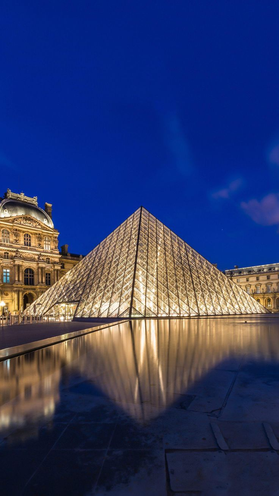

Architect: Frank Lloyd Wright, renowned American architect known for his organic, "Prairie School" style
Completed in 1939
Located over a waterfall in the Mill Run section of Stewart Township, Pennsylvania
Designed as a vacation home, the building integrates seamlessly with the natural waterfall and surrounding landscape
Cantilevered concrete terraces and balconies extend out over the waterfall, creating a sense of living within nature
Uses natural materials like stone and wood to blend with the site's geology and vegetation
Sydney Opera House by Jørn Utzon
Architect: Jørn Utzon, Danish architect
Completed in 1973
Iconic performing arts center located on the shore of Sydney Harbour in Australia
Takes inspiration from organic shapes in nature, like shells, sails, and feathers
Distinct curved, sculptural roof forms made of precast concrete panels
The building's fluid, sail-like shapes evoke the maritime setting and Sydney's coastal environment
Artifact-Inspired Building Designs
Museum of Islamic Art in Doha, Qatar by I.M. Pei
Architect: I.M. Pei, renowned American architect known for his modern, geometric designs
Completed in 2008
Located in Doha, Qatar, overlooking the Persian Gulf
Features a striking, faceted exterior design inspired by traditional Islamic architecture and geometric patterns
The building's form is meant to evoke the shape of a ship's prow, connecting it to Qatar's seafaring history
Interior spaces are designed around a central atrium space, with galleries displaying the museum's collection of Islamic art and artifacts
Louvre Pyramid in Paris, France by I.M. Pei
Architect: I.M. Pei, the same architect as the Museum of Islamic Art
Completed in 1989
Located in the courtyard of the Louvre Palace in central Paris
The modern glass and metal pyramid structure serves as the main entrance to the Louvre Museum
Design is inspired by the historical French royal architecture, particularly the geometric forms and pyramidal shapes found in the Louvre's existing buildings
The transparency of the glass pyramid is intended to symbolize openness and accessibility to the museum's vast art collection
The pyramid's placement and integration with the existing Louvre Palace creates a striking juxtaposition of old and new architectural styles

History and Culture-Inspired Building Designs
Lotus Temple in New Delhi, India by Fariborz Sahba
Architect: Fariborz Sahba, Canadian architect of Iranian descent
Completed in 1986
Located in New Delhi, India
The unique architectural design of the Lotus Temple resembles a blooming lotus flower, a sacred symbol in Hinduism and Buddhism.
The lotus flower design represents unity, peace, and spirituality, drawing from rich cultural symbolism.
The temple's nine sides and 27 free-standing marble petals are meant to evoke the shape of a lotus flower in full bloom.
The stark white, sculptural form stands in contrast to the lush, green landscaping surrounding it.
The temple's design and location were carefully chosen to reflect India's rich spiritual and cultural heritage.
Hagia Sophia in Istanbul, Turkey
Originally constructed as a Christian cathedral in the 6th century AD under Byzantine Emperor Justinian I
Later converted into a mosque in the 15th century under the Ottoman Empire
Architectural design blends Byzantine Christian and Ottoman Islamic styles
Famous for its massive central dome, ornate mosaics, and towering interior spaces
The building has served as both a place of Christian worship and Muslim prayer, reflecting the complex cultural history of Istanbul